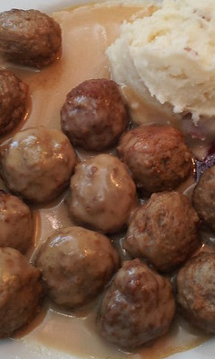

Swedish Meatballs
This is one of my favorite recipes, because I love the flavor of the sauce. I am still a high school student, so my mom still often cooks dinner for me. This is one of the many great things that she makes.

"Swedish Meatballs" by jchapiewsky is licensed under CC BY-SA 2.0 

 .
.
Ingredients
- 3 slices white bread, crusts removed, cut into cubes (about 2 cups)
- 1/4 cup milk
- 4 tablespoons butter, divided
- 1/2 large yellow or white onion, grated using the large holes of a box grater
- 1 large egg
- 3/4 pound ground beef
- 1/2 pound ground pork
- 1 teaspoon kosher salt
- 1 teaspoon black pepper
- 1/2 teaspoon freshly grated nut
- 1/2 teaspoon ground cardamom
- 3 tablespoons butter
- 3 tablespoons flour
- 2 cups beef stock
- 1/4 cup sour cream (use full-fat or the sauce may curdle)
- 2 tablespoons lingonberry, red currant, raspberry, or cranberry jelly, to taste (optional)
- Salt and pepper, to taste
Instructions
- Place the cubed bread in a large bowl and mix with the milk. Let sit for 5 to 10 minutes. Once the bread has soaked up all the milk, shred with the tines of a fork or by hand.
- Melt 1 tablespoon of butter in a sauté pan on medium-high heat. Stir in the grated onion and cook until translucent and softened, 3 to 4 minutes. Remove from the heat and let cool for a minute.
- Stir the cooled onions into the milk bread mixture. Add the egg, ground beef and pork, salt, pepper, nutmeg, and cardamom. Use your (clean) hands to mix everything together until well combined. (If you have extra time, chilling the mixture for 20 or so minutes will make it easier to roll out the meatballs.)
- Use your hands to form the mixture into meatballs about 1 1/4-inch to 1 1/2-inch wide and place them on a plate or sheet pan. This recipe should make about 40 meatballs. Note that the meatballs will be a bit on the wet side.
- Heat 3 tablespoons of butter in a large sauté pan on medium heat. When the butter is melted and foamy, start adding some meatballs to the pan. Working in batches as to not crowd the pan, slowly brown the meatballs on all sides. Use a wooden spoon or tongs to turn them. Handle the meatballs gently so they do not break apart as you turn them. Once the meatballs have browned on all sides and are just cooked through, remove them from the pan to a bowl. You'll warm the meatballs in the sauce later. Once you have removed the meatballs from the pan, wipe out the butter and blackened bits with a paper towel. We'll want to start with fresh butter so we don't pick up any burnt bits from the pan. This way, we will be able to more accurately gauge the amount of fat in the pan for making the meatball sauce in the next step.
- Add 3 tablespoons of fresh butter to the pan. Heat the butter in the pan on medium heat until it melts and starts to bubble. Slowly whisk in 3 tablespoons of flour. Stir until smooth. Continue to stir, allowing the flour mixture to cook, several minutes, until the roux is the color of coffee with cream.
- When the roux has cooked to a lovely shade of light brown, slowly add the stock, stirring as you do. The stock will sputter at first and the roux may seize up, but keep adding the stock slowly and keep stirring. Eventually the sauce will loosen and become silky.
- Remove the pan from heat and stir in the sour cream. If you are including jelly, either stir it in now or serve it on the side. Taste for seasonings and add more salt and pepper to taste. (I use about 1/2 teaspoon of kosher salt, and 1/4 teaspoon of pepper.)
- Return the meatballs to the pan with the sauce and cook on low heat to warm them through for a few minutes.
- Serve over mashed potatoes or egg noodles. Or serve individual Swedish meatballs dipped in gravy as an appetizer.
Back to the Treats Page | Back to the Home Page